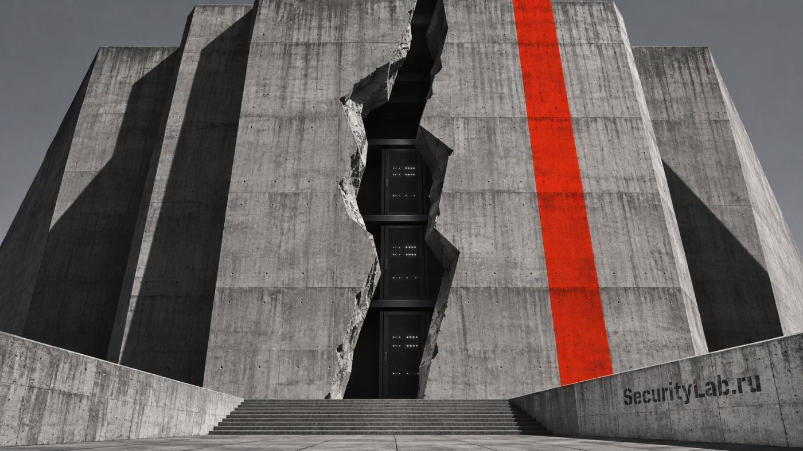

В ноябре российский хостинг сыпется один за другим. После 8 ноября упало облако ESTT (e-Style Telecom) — провайдера, который обслуживает бизнес-проекты. Почтовые сутки компания называла происходящее «серьёзным техническим сбоем», а 9 ноября признала: это была кибератака с программой-шифровальщиком.
Злоумышленники ударили не по отдельным сайтам, а по кластерам виртуализации и системам управления облачной платформой — именно поэтому клиенты потеряли доступ сразу ко всему. К 9 ноября удалось поднять 90% виртуальных серверов, но личный кабинет ESTT недоступен до сих пор, а точные сроки полного восстановления компания назвать не может. Выделенные физические серверы атака не затронула — повреждена именно надстройка управления.
Что случилось с данными на оставшихся 10% и требовали ли выкуп — неизвестно. Следов утечки пока не нашли, но гарантий никто не даёт. У ESTT уже был громкий инцидент: в июле 2025-го DDoS-атака на провайдера парализовала «Вкусно — и точку», Cofix, iiko, «Суши мастер» и «Много лосося».
И это второй удар за неделю: 6 ноября мы разбирали разгром Beget — там хакеры уничтожили инфраструктуру S3 и Kubernetes вместе с клиентскими бэкапами. Паттерн тревожный: вместо банальных DDoS теперь бьют по гипервизорам и централизованной системе управления облаком, где один взлом вырубает тысячи клиентов сразу.
Отсюда скучный, но живой вывод: если бэкап лежит в том же облаке, что и продакшен, — он не переживёт следующую атаку. Обычный локальный диск снова выглядит разумной инвестицией.